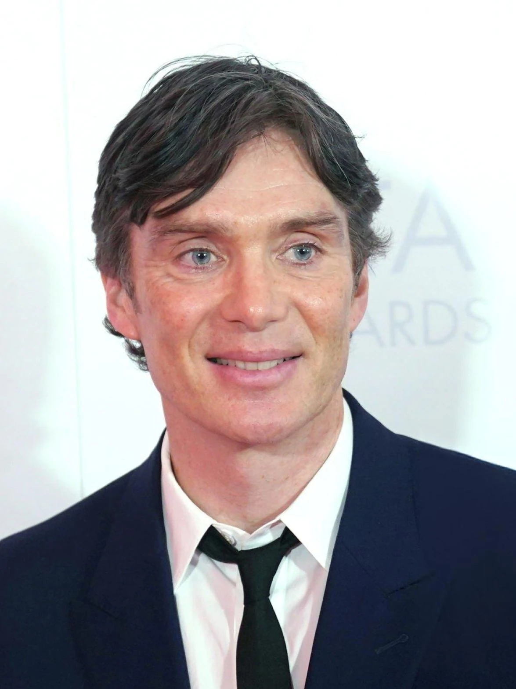

Directores · Guionistas · Productores


Equipo creativo
Creador · Guionista principal
Steven Knight
Guionista y director inglés, Knight creó la serie inspirándose en las historias de su propia familia de Birmingham. También es el creador de Locke y Eastern Promises.

Actor protagonista · Productor ejecutivo
Cillian Murphy
Actor irlandés que da vida a Thomas Shelby. Su interpretación le valió el Premio BAFTA y el Globo de Oro. En 2024 ganó el Oscar por Oppenheimer.
Productora ejecutiva
Caryn Mandabach
Productora estadounidense responsable de llevar la serie a BBC One. Fundó Caryn Mandabach Productions y fue clave en el desarrollo del proyecto desde sus inicios.